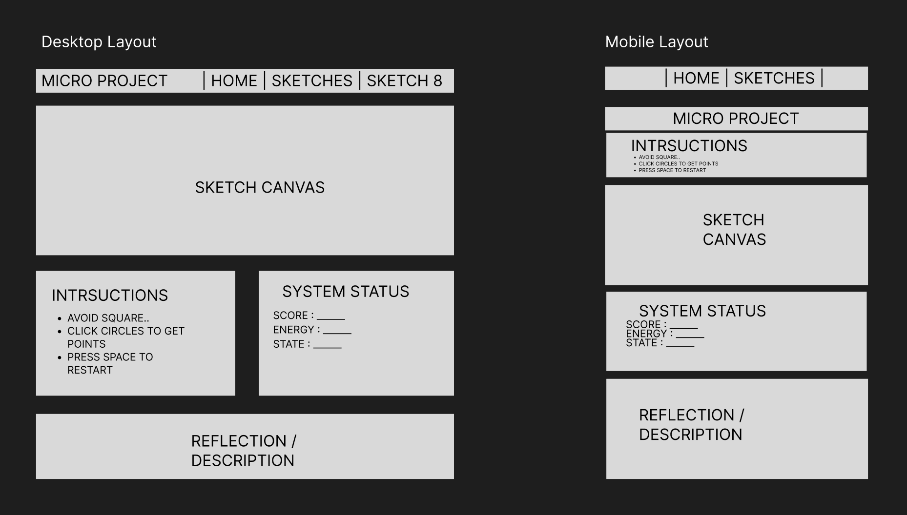

This week I focused on restructuring my micro project page to better communicate how the system is used. The primary decision I concluded to was to establish a hierarchy where my game is in the center and supported by persistent system information and instructions around. I dedicated sections to system status, intstructions and description.
Another decision I made was defining the constent navigation model. I added a summple top navigation bar that helps the user navigate through the pages easily. This makes the interface easier to use and more preicatable.
There is also a permenant instruction block placed next to the sketch so that instructions are always clear and there for you if needed. This changes the fact that players had to learn though trial and error, now having clear instructions so communication is more clear. It is now a immediate undesrtanding on how the game works.
For the mobile layout I had to rethring the structure since its completely different. Instead of a horisontal spread, I had to think vertical. So now everything is stacked, there will be scrolling needed to access info but that is the reality of the mobile device.
Something that feels unresolved is how to communicate the more complex system behaviors such as the difficulty levels. I dont want to overwhelm the interace so that is something I need to put some more thought into. While basic instruction is now visible, the deeper system logic is still learned through trial and error. Moving forward I want to explore different ways to communicate these internal mechanics.